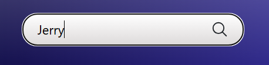
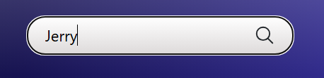

Proyectos


The King Tiger
e-commerce
Desarrollé una aplicación web que incluye tanto el front-end como el back-end, junto con la base de datos necesaria para la persistencia de la información en conjunto siguiendo la metodología SCRUM.


Gestor de Clientes
Interfaz programada
Desarrollo de un sistema gestor de clientes desarrollado con Python y su biblioteca estándar Tkinter, para manipular datos mediante instrucciones de creación, edición y eliminación en archivos CSV.

Desarrollo de Periferia Descentralizada
Sistema de automatización
Construcción de módulo de periferia descentralizada, desarrollado desde la parte de diseño, programación, simulación, pruebas y documentación para el control con PLC SIEMENS de motores de corriente alterna, manejo de señales y protocolos de comunicación industriales EtherCAT y Profinet.
 

Buscador de personajes Rick & Morty
Consumo de API
Proyecto de creación de un sistema gestor de clientes desarrollado con Python y su biblioteca estándar Tkinter, para manipular datos mediante instrucciones de creación, edición y eliminación en archivos CSV.